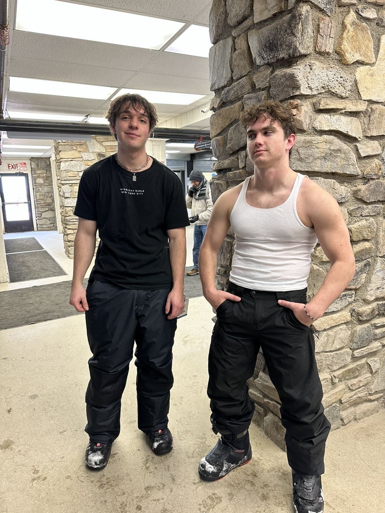
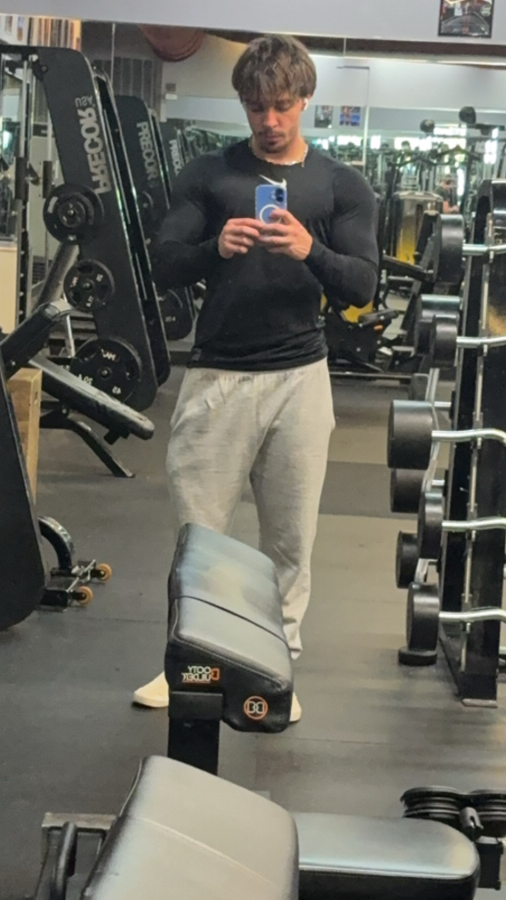

This is a picture of me and my friend Zeke when we went snowboarding in North Carolina last year.
My Hobbies
In my free time, I enjoy hiking, p laying games, reading books, rock climbing, and going to the gym. I also like to read about new technologies and trends in the tech industry.
Gaming takes up a large portion of my time. Most days after class i will get on the playstiaon with my freinds from back home who i do not get to talk to much and talk to them. Recently i Have been playing Marvel Rivals and some Fifa.I have been trying to read more instead of playing games or sitting on my phone so much. I enjoy reading fiction novels of most all genres. In 2024 I read the most books I ever have in a year at 24 I hope I can increase this number this year. A relatively new hobby of mine is rock climbing. I started in september of 2024 and have been trying to go once or twice weekly ever since. I usually try to go with the lipscomb climbing club but recently got a membership closer to the school.

Going to the gym has become more of a habit for me than a hobby i feel weird when I dont get go. I started going in the fall of 2023 and have not gone a week without going since. I try to go 5-6 days a week on a push pull legs split. I have been trying to balance going to the gym with rock climbing.